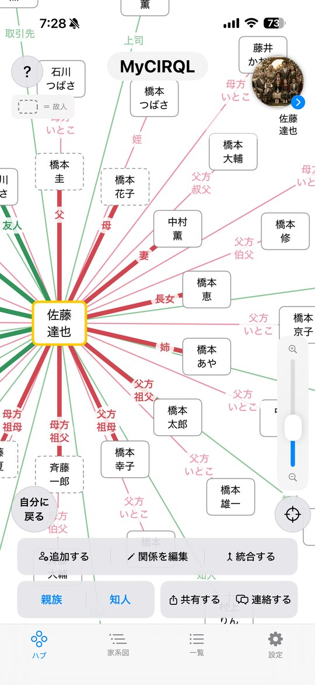
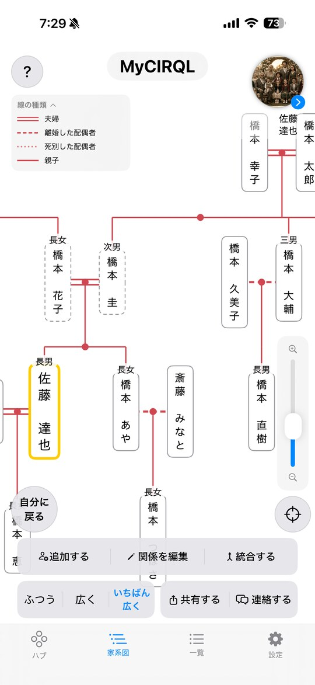
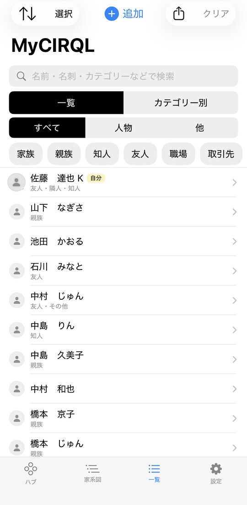
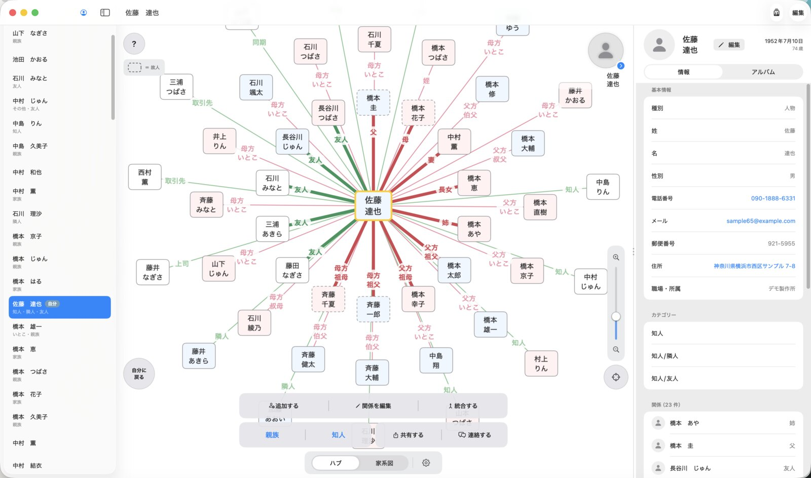
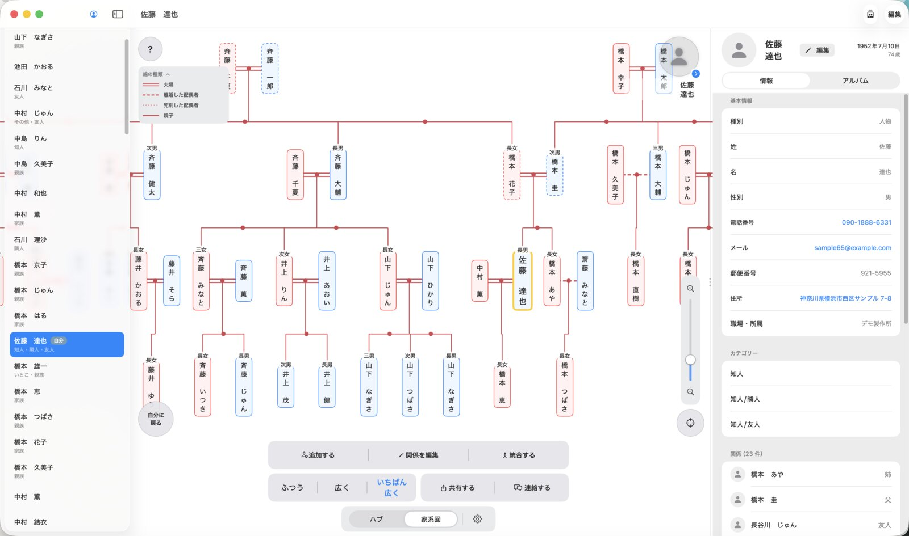
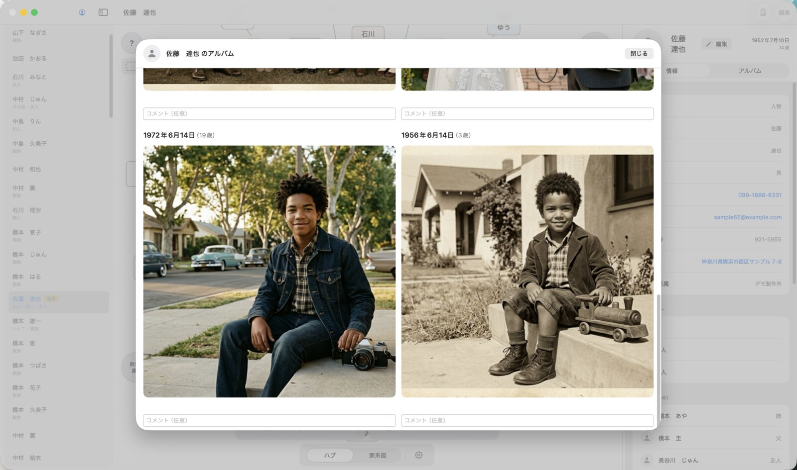

頭の中の人間関係を、
そのまま図に。
家族・親戚・友人・お店を、相関図と家系図で整理するアプリです。
「この人は誰の何にあたるのか」が、ひと目でわかります。
SNSではありません。誰かとつながる機能も、あなたの情報を外に送る仕組みもありません。
App Store でダウンロード
無料ではじめられます
家族・親戚・友人・お店を、相関図と家系図で整理するアプリです。
「この人は誰の何にあたるのか」が、ひと目でわかります。
SNSではありません。誰かとつながる機能も、あなたの情報を外に送る仕組みもありません。

FEATURES
タップするたびに、つながりが少しずつ育っていきます。
「誰が誰の何か」を選んで登録するだけ。ドラマの相関図のように、その人を中心とした関係が広がります。
親子・夫婦を登録していくだけで、日本式の縦の家系図ができあがります。長男・長女の順番も自動で並びます。
その人の写真を撮影日とともに保存。「何歳ごろの写真か」が自動で表示され、PDFにまとめて残せます。
誕生日・記念日・命日（四十九日から三回忌まで）が近づくとお知らせします。うっかり忘れを防げます。
結婚式や法事の名簿として、選んだ人だけをCSVやPDFに書き出せます。相関図・家系図もそのままPDFに。
手入力のほか、名刺をカメラで読み取ったり、お使いの携帯の連絡先から取り込んだりできます。
SCREENS
横にスクロールしてご覧ください。
ハブ
その人を中心に関係が広がる

家系図
縦に世代が並ぶ日本式

一覧
カテゴリーや関連度で絞り込み
FOR MAC
公開中
広い画面を活かして、一覧・相関図・プロフィールを横に並べて表示します。 キーボードで入力しやすく、たくさんの人をまとめて整理するのに向いています。 iPhone・iPad と同じデータを iCloud で共有できます。
iPhone 版をお持ちの方は、追加のお支払いなくそのままお使いいただけます。


家系図も、広い画面でまとめて見渡せます

アルバムは大きく開いて、じっくり見られます
このアプリで登録した内容は、あなたの端末と、あなたの iCloud（プライベート領域）にだけ保存されます。SNSのように誰かとつながったり、開発者がデータを受け取ったりすることは一切ありません。
※ 住所を自動で入力するためだけに、郵便番号を調べるときに限り、外部の住所サービスへ郵便番号を送ります。それ以外にデータを外部へ送ることはありません。
はい。登録して図をつくるところまでは無料でお使いいただけます。CSV・PDFの書き出しや、アプリからの連絡、図の画像保存などをまとめて使えるようにする買い切りのプレミアム（400円）をご用意しています。月額ではありません。
お使いの端末と、あなたご自身の iCloud にだけ保存されます。開発者がその中身を見ることはできません。詳しくはプライバシーポリシーをご覧ください。
はい。同じ Apple アカウントでサインインしていれば、iCloud を通じて自動的に同じ内容が表示されます。
iCloud に保存されているので、新しい端末で同じ Apple アカウントにサインインすれば、そのまま引き継がれます。
設定から、起動時に Face ID・Touch ID・パスコードで本人確認するロックをかけられます。人に画面を見せるときに名前を伏せて表示する機能もあります。